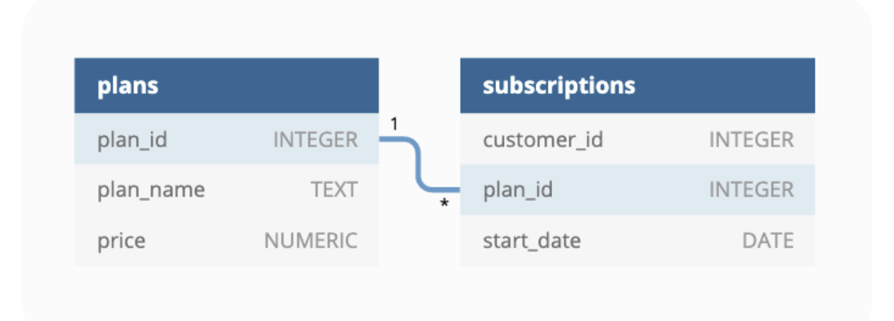

Fourth part of a series of SQL case studies… more CTEs!
sql
Author
Edun Joshua
Published
November 19, 2023
Introduction
Data Bank runs just like any other digital bank - but with a distributed data storage platform. Customers are allocated cloud data storage limits which are directly linked to how much money they have in their accounts. The management team at Data Bank want to increase their total customer base - but also need some help tracking just how much data storage their customers will need. This case study is all about calculating metrics, growth and helping the business analyse their data in a smart way to better forecast and plan for their future developments!
Entity Relationship Diagram

Database Connection
First, I’ll create a connection to my local postgres database thanks to the RPostgres package.
# | warning: false# Creating a connection to my local postgres databaselibrary(RPostgres)con <-dbConnect(Postgres(),dbname ="data_bank",user ="postgres",password = my_password)
Queries
A. Customer Nodes Exploration
1. How many unique nodes are there on the Data Bank system?
selectcount(DISTINCT node_id) as unique_nodesfrom customer_nodes;
1 records
unique_nodes
5
2. What is the number of nodes per region?
select region_id,count(DISTINCT node_id) as nodes_per_regionfrom customer_nodesGROUPBY region_id;
5 records
region_id
nodes_per_region
1
5
2
5
3
5
4
5
5
5
3. How many customers are allocated to each region?
select r.region_name,count(distinct cn.customer_id) as customers_per_regionfrom customer_nodes cnnaturalJOIN regions rGROUPBY region_name;
5 records
region_name
customers_per_region
Africa
102
America
105
Asia
95
Australia
110
Europe
88
4. How many days on average are customers reallocated to a different node?
with cte1 as(select customer_id, node_id,lead(node_id) over(partitionby customer_idorderby start_date ) as lead_node, start_date,lead(start_date) over(partitionby customer_idorderby start_date ) as lead_datefrom customer_nodes),cte2 as (select lead_date - start_date as days_btw_next_nodefrom cte1)selectround(avg(days_btw_next_node)::numeric, 2) as average_reallocation_periodfrom cte2;
1 records
average_reallocation_period
15.63
5. What is the median, 80th and 95th percentile for this same reallocation days metric for each region?
with cte1 as(select customer_id, region_id, node_id,lead(node_id) over(partitionby customer_idorderby start_date ) as lead_node, start_date,lead(start_date) over(partitionby customer_idorderby start_date ) as lead_datefrom customer_nodes),cte2 as(select*, lead_date - start_date as days_btw_next_nodefrom cte1)select region_id,percentile_disc (0.5) within group (orderby days_btw_next_node ) as median_realloc_metric,percentile_disc (0.8) within group (orderby days_btw_next_node ) as pctile_80_realloc_metric,percentile_disc (0.95) within group (orderby days_btw_next_node ) as pctile_95_realloc_metricfrom cte2GROUPBY1;
5 records
region_id
median_realloc_metric
pctile_80_realloc_metric
pctile_95_realloc_metric
1
16
24
29
2
16
24
29
3
16
25
29
4
16
24
29
5
16
25
29
B. Customer Transactions
1. What is the unique count and total amount for each transaction type?
select txn_type as transaction_type, count(distinct (customer_id, txn_date, txn_amount, txn_amount)) as txn_dcount, sum(txn_amount) as txn_amount_sumfrom customer_transactionsgroupby1;
3 records
transaction_type
txn_dcount
txn_amount_sum
deposit
2671
1359168
purchase
1617
806537
withdrawal
1580
793003
2. What is the average total historical deposit counts and amounts for all customers?
selectavg(txn_amount) as avg_historical_deposit_counts ,count(txn_type) as deposit_countsfrom customer_transactionswhere txn_type ='deposit';